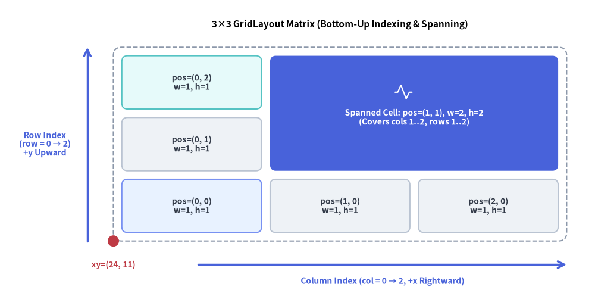
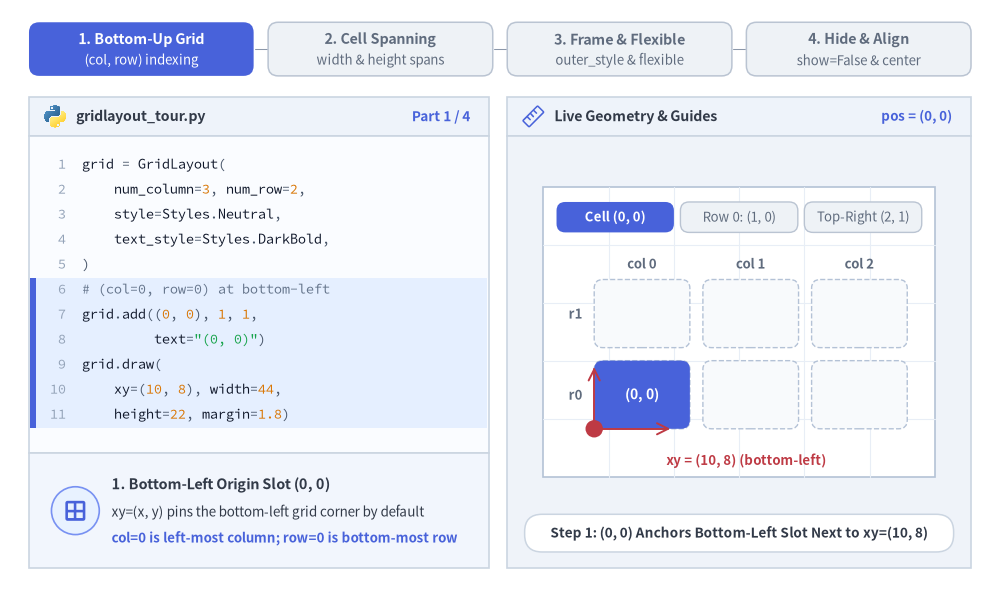
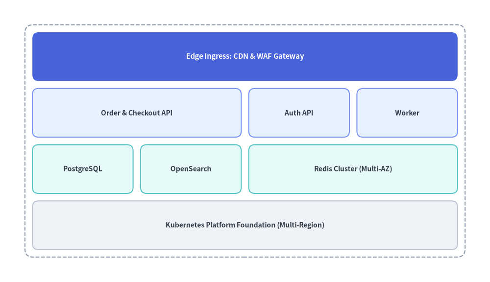
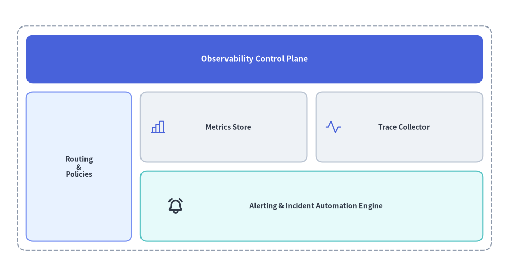

GridLayout（グリッドレイアウト）
GridLayout コンポーネントは、均等または可変サイズの列・行マトリクス上にカードや矩形ブロックを配置します。
複数列・複数行にまたがるセル結合スパン、外枠コンテナ境界線、比例スケーリングを備えており、多層システムアーキテクチャ、サービスマトリクス、エグゼクティブダッシュボードのレイアウトに最適です。

Source Code
from drawlib.canvas import save, setup
from drawlib.icons import phosphor
from drawlib.lines import line
from drawlib.shapes import circle
from drawlib.smartarts import GridLayout
from drawlib.styles import Styles
from drawlib.text import text
setup(width=126, height=62)
grid = GridLayout(
num_column=3,
num_row=3,
style=Styles.Neutral.patch(shape_r=1.2),
text_style=Styles.DarkBold.patch(text_size=10.0),
)
# Row 0 (Bottom Row)
grid.add(position=(0, 0), width=1, height=1, text="pos=(0, 0)\nw=1, h=1", style=Styles.PrimaryNeutral.patch(shape_r=1.2))
grid.add(position=(1, 0), width=1, height=1, text="pos=(1, 0)\nw=1, h=1")
grid.add(position=(2, 0), width=1, height=1, text="pos=(2, 0)\nw=1, h=1")
# Row 1 (Middle Row) & Spanned Cell across Columns 1..2, Rows 1..2
grid.add(position=(0, 1), width=1, height=1, text="pos=(0, 1)\nw=1, h=1")
grid.add(
position=(1, 1),
width=2,
height=2,
text="\nSpanned Cell: pos=(1, 1), w=2, h=2\n(Covers cols 1..2, rows 1..2)",
style=Styles.PrimaryFlat.patch(shape_r=1.2),
text_style=Styles.WhiteBold.patch(text_size=10.0),
)
# Row 2 (Top Row, Column 0)
grid.add(position=(0, 2), width=1, height=1, text="pos=(0, 2)\nw=1, h=1", style=Styles.SecondaryNeutral.patch(shape_r=1.2))
grid.draw(
xy=(24.0, 11.0),
width=96.0,
height=41.0,
margin=1.8,
outer_style=Styles.MutedDashed.patch(shape_r=1.8),
)
# Icon inside the spanned hero cell
phosphor.activity(xy=(85.5, 42.5), width=4.2, style=Styles.White)
# Axis arrows and anchor dot at bottom-left xy=(24, 11)
line((42.0, 6.0), (120.0, 6.0), arrow_head="->", style=Styles.PrimaryBold)
text((81.0, 2.5), "Column Index (col = 0 → 2, +x Rightward)", style=Styles.PrimaryBold.patch(text_size=10.0))
line((18.5, 11.0), (18.5, 52.0), arrow_head="->", style=Styles.PrimaryBold)
text((9.5, 31.5), "Row Index\n(row = 0 → 2)\n+y Upward", style=Styles.PrimaryBold.patch(text_size=10.0))
circle((24.0, 11.0), radius=1.2, style=Styles.DangerFlat)
text((24.0, 6.0), "xy=(24, 11)", style=Styles.DangerBold.patch(text_size=10.0))
text((72.0, 56.8), "3×3 GridLayout Matrix (Bottom-Up Indexing & Spanning)", style=Styles.BlackBold.patch(text_size=11.0))
save()
1. 基本概念と基本的な使い方
GridLayout は、デフォルトで左下角 (x, y)（align="bottom_left"）または中央（align="center"）を基準とする、0 始まりのボトムアップ (col, row) マトリクス上にカードを配置します。.add((col, row), width, height, ...) で追加したセルは複数列・複数行への結合スパンが可能で、outer_style コンテナ内での均等配置や draw_flexible(...) による任意比率配置、さらに他のセルの座標をずらさない .items[i].show = False の切り替えに対応しています。

- ボトムアップの
(col, row)マトリクス（xy,num_column,num_row）: デフォルトで左下xyを基準に配置され（align="bottom_left"）、col = 0が左端から右方向（+X）、row = 0が下端から上方向（+Y）へ進みます。 - 複数セルの結合スパン（
.add((col, row), width, height)）: 右方向へwidth列、上方向へheight行を内部の余白（ガター）ごとシームレスに結合し、バナーヘッダー、サイドバー、複数スロットにまたがるコア領域を構成できます。 - 外枠コンテナと可変トラック（
outer_style,draw_flexible）:outer_styleを渡してマトリクス全体をパディング付きコンテナカードで囲むほか、明示的なcolumn_widths・column_margins・row_heights・row_marginsを指定したdraw_flexible(...)による非対称レイアウトに対応します。 - スロット位置を維持した非表示化と中央配置（
items[i].show,align="center"）:grid.items[i].show = Falseを設定するとマトリクス座標をずらさずに特定のセルを非表示にでき、align="center"を渡すとグリッド全体をxyの中央に配置できます。
2. 複数セル結合によるアーキテクチャ・ダッシュボードレイアウト（draw）
標準モード（grid.draw(...)）では、全体の width と height を均一な margin（ガター間隔）で num_column 列 × num_row 行へと均等分割します。outer_style を指定した場合は外周コンテナ枠が描画され、四辺の外周にも同じ内側マージンが確保されます。
from drawlib.canvas import save, setup
from drawlib.smartarts import GridLayout
from drawlib.styles import Styles
setup(width=118, height=68)
grid = GridLayout(
num_column=4,
num_row=4,
style=Styles.Neutral.patch(shape_r=1.5),
text_style=Styles.DarkBold.patch(text_size=10.0),
)
# Row 3 (Top): Edge Ingress spanning all 4 columns (Hero focal layer)
grid.add(
position=(0, 3),
width=4,
height=1,
text="Edge Ingress: CDN & WAF Gateway",
style=Styles.PrimaryFlat.patch(shape_r=1.5),
text_style=Styles.WhiteBold.patch(text_size=10.5),
)
# Row 2: Application Services Layer
grid.add(position=(0, 2), width=2, height=1, text="Order & Checkout API", style=Styles.PrimaryNeutral.patch(shape_r=1.5))
grid.add(position=(2, 2), width=1, height=1, text="Auth API", style=Styles.PrimaryNeutral.patch(shape_r=1.5))
grid.add(position=(3, 2), width=1, height=1, text="Worker", style=Styles.PrimaryNeutral.patch(shape_r=1.5))
# Row 1: Persistence & Caching Tier
grid.add(position=(0, 1), width=1, height=1, text="PostgreSQL", style=Styles.SecondaryNeutral.patch(shape_r=1.5))
grid.add(position=(1, 1), width=1, height=1, text="OpenSearch", style=Styles.SecondaryNeutral.patch(shape_r=1.5))
grid.add(position=(2, 1), width=2, height=1, text="Redis Cluster (Multi-AZ)", style=Styles.SecondaryNeutral.patch(shape_r=1.5))
# Row 0 (Bottom): Shared Infrastructure Foundation
grid.add(
position=(0, 0),
width=4,
height=1,
text="Kubernetes Platform Foundation (Multi-Region)",
style=Styles.Neutral.patch(shape_r=1.5),
)
grid.draw(
xy=(6, 6),
width=106,
height=56,
margin=1.8,
outer_style=Styles.MutedDashed.patch(shape_r=2.0),
)
save()

3. 可変グリッドサイズとカスタム要素のオーバーレイ（draw_flexible）
狭いサイドバーと広いメインコンテンツ領域の組み合わせや、コンパクトなヘッダー行など、列や行に非対称な比率が必要な場合は、明示的な column_widths・column_margins・row_heights・row_margins を指定して grid.draw_flexible(...) を使用します。各セルの位置は xy から決定論的に算出できるため、任意のセル内に標準のアイコンや図形を正確に重ねて配置することも可能です。
from drawlib.canvas import save, setup
from drawlib.icons import phosphor
from drawlib.smartarts import GridLayout
from drawlib.styles import Styles
setup(width=116, height=62)
grid = GridLayout(
num_column=3,
num_row=3,
style=Styles.Neutral.patch(shape_r=1.5),
text_style=Styles.DarkBold.patch(text_size=10.0),
)
# Top Header (Row 2, spanning 3 columns)
grid.add(
position=(0, 2),
width=3,
height=1,
text="Observability Control Plane",
style=Styles.PrimaryFlat.patch(shape_r=1.5),
text_style=Styles.WhiteBold.patch(text_size=11.0),
)
# Left Navigation Sidebar (Column 0, spanning Rows 0..1)
grid.add(
position=(0, 0),
width=1,
height=2,
text="Routing\n&\nPolicies",
style=Styles.PrimaryNeutral.patch(shape_r=1.5),
)
# Main Content Cards (Columns 1..2, Rows 0..1)
grid.add(position=(1, 1), width=1, height=1, text=" Metrics Store", style=Styles.Neutral.patch(shape_r=1.5))
grid.add(position=(2, 1), width=1, height=1, text=" Trace Collector", style=Styles.Neutral.patch(shape_r=1.5))
grid.add(
position=(1, 0),
width=2,
height=1,
text=" Alerting & Incident Automation Engine",
style=Styles.SecondaryNeutral.patch(shape_r=1.5),
)
# Render with custom column widths [24, 38, 38] and row heights [16, 16, 11]
grid.draw_flexible(
xy=(4, 5),
column_widths=[24.0, 38.0, 38.0],
column_margins=[2.0, 2.0, 2.0, 2.0],
row_heights=[16.0, 16.0, 11.0],
row_margins=[2.0, 2.0, 2.0, 2.0],
outer_style=Styles.MutedDashed.patch(shape_r=2.0),
)
# Overlay Phosphor icons inside the metric/trace/alert cells using deterministic coordinates
phosphor.chart_bar(xy=(36, 33), width=4.0, style=Styles.PrimaryFlat)
phosphor.activity(xy=(76, 33), width=4.0, style=Styles.PrimaryFlat)
phosphor.bell_ringing(xy=(40, 15), width=4.0, style=Styles.DarkBold)
save()

4. 座標系とインデックスの規則
ページ冒頭の図解に示されているとおり、座標とインデックスは以下の規則に従います。
- 左下アンカー
(x, y):draw()またはdraw_flexible()に渡すxy座標は、グリッド全体の左下角を指定します（デフォルトのalign="bottom_left"の場合）。 - 0 始まりのボトムアップ行インデックス:
column_start = 0は最左列を表し、右方向へ増加します（0〜num_column - 1）。row_start = 0は最下行を表し、上方向へ増加します（0〜num_row - 1）。
- セルスパン（複数セル結合）:
grid.add(position=(col, row), width=w, height=h)は、右方向へw列（col〜col + w - 1）、上方向へh行（row〜row + h - 1）にまたがってセルを結合します。
5. API リファレンス
コンストラクタ
GridLayout(
*,
num_column: int,
num_row: int,
style: Style,
text_style: Style,
)
メソッドとプロパティ
add(position: tuple[int, int], width: int, height: int, *, style: Style | None = None, text: str = "", text_style: Style | None = None, show: bool = True) -> GridItem:position=(column_start, row_start)を起点にwidth列・height行にまたがるグリッドカードを登録し、変更可能なGridItem（position,width,height,style,text,text_style,show）を返します。show=Falseを設定すると、マトリクス全体のレイアウトを維持したまま該当セルのみを非表示にします。grid.items -> list[GridItem]: 登録済みのすべてのGridItemインスタンスのリスト（position: tuple[int, int],width: int,height: int,style: Style,text: str,text_style: Style,show: bool）を返します。draw()の呼び出し前や複数回の呼び出し間でプロパティを事後変更できます。draw(xy: tuple[float, float], width: float, height: float, margin: float, outer_style: Style | None = None, scale: float = 1.0) -> None: 均等な列幅と行高さをmarginの間隔で区切ってグリッドを描画します。outer_styleを指定した場合、外側を囲むコンテナ矩形を描画し、外周にもmargin分の内側パディングを追加します。draw_flexible(xy: tuple[float, float], column_widths: list[float], column_margins: list[float], row_heights: list[float], row_margins: list[float], outer_style: Style | None = None, scale: float = 1.0) -> None: 明示的な列幅（len == num_column）、列マージン（len == num_column + 1）、行高さ（len == num_row）、および行マージン（len == num_row + 1）を指定してグリッドを描画します。